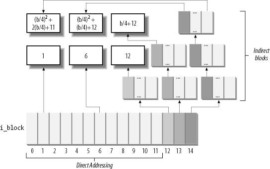
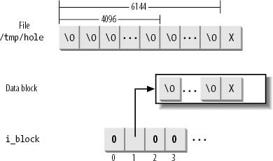

{% include JB/setup %}
{% raw %}
<div>


<a name="understandlk-CHP-18-SECT-6"></a>
<h3 class="docSection1Title">18.6. Managing Ext2 Disk Space</h3><a name="IDX-CHP-18-4417"></a>
<a name="IDX-CHP-18-4418"></a>
<a name="IDX-CHP-18-4419"></a>
<a name="IDX-CHP-18-4420"></a>
<a name="IDX-CHP-18-4421"></a>
<a name="IDX-CHP-18-4422"></a>
<a name="IDX-CHP-18-4423"></a>
<a name="IDX-CHP-18-4424"></a>
<a name="IDX-CHP-18-4425"></a>
<a name="IDX-CHP-18-4426"></a>
<a name="IDX-CHP-18-4427"></a>
<a name="IDX-CHP-18-4428"></a>
<a name="IDX-CHP-18-4429"></a>
<p class="docText1">The storage of a file on disk differs from the view the programmer has of the file in two ways: blocks can be scattered around the disk (although the filesystem tries hard to keep blocks sequential to improve access time), and files may appear to a programmer to be bigger than they really are because a program can introduce holes into them (through the <tt class="calibre25">lseek( )</tt> system call).</p>
<p class="docText1">In this section, we explain how the Ext2 filesystem manages the disk space  how it allocates and deallocates inodes and data blocks. Two main problems must be addressed:</p>
<ul class="calibre11"><li class="calibre12"><p class="docText1">Space management must make every effort to avoid <span class="docEmphasis">file fragmentation</span><a name="IDX-CHP-18-4430"></a> 
  the physical storage of a file in several, small pieces located in non-adjacent disk blocks. File fragmentation increases the average time of sequential read operations on the files, because the disk heads must be frequently repositioned during the read operation.<sup class="docFootnote"><a class="pcalibre5 docLink pcalibre1" href="#understandlk-CHP-18-FN4">[*]</a></sup> This problem is similar to the external fragmentation of RAM discussed in the section "<a class="pcalibre5 docLink pcalibre1" href="understandlk-CHP-8-SECT-1.html#understandlk-CHP-8-SECT-1.7">The Buddy System Algorithm</a>" in <a class="pcalibre5 docLink pcalibre1" href="understandlk-CHP-8.html#understandlk-CHP-8">Chapter 8</a>.</p><blockquote class="calibre22"><p class="docFootnote1"><sup class="calibre24"><a name="understandlk-CHP-18-FN4">[*]</a></sup> Please note that fragmenting a file across block groups (A Bad Thing) is quite different from the not-yet-implemented fragmentation of blocks to store many files in one block (A Good Thing).</p></blockquote></li><li class="calibre12"><p class="docText1">Space management must be time-efficient; that is, the kernel should be able to quickly derive from a file offset the corresponding logical block number in the Ext2 partition. In doing so, the kernel should limit as much as possible the number of accesses to addressing tables stored on disk, because each such intermediate access considerably increases the average file access time.</p></li></ul>
<a name="understandlk-CHP-18-SECT-6.1"></a>
<h4 class="docSection2Title">18.6.1. Creating inodes</h4><a name="IDX-CHP-18-4431"></a>
<a name="IDX-CHP-18-4432"></a>
<a name="IDX-CHP-18-4433"></a>
<a name="IDX-CHP-18-4434"></a>
<a name="IDX-CHP-18-4435"></a>
<a name="IDX-CHP-18-4436"></a>
<a name="IDX-CHP-18-4437"></a>
<a name="IDX-CHP-18-4438"></a>
<a name="IDX-CHP-18-4439"></a>
<p class="docText1">The <tt class="calibre25">ext2_new_inode( )</tt> function creates an Ext2 disk inode, returning the address of the corresponding inode object (or <tt class="calibre25">NULL</tt>, in case of failure). The function carefully selects the block group that contains the new inode; this is done to spread unrelated directories among different groups and, at the same time, to put files into the same group as their parent directories. To balance the number of regular files and directories in a block group, Ext2 introduces a "debt" parameter for every block group.</p>
<p class="docText1">The function acts on two parameters: the address <tt class="calibre25">dir</tt> of the inode object that refers to the directory into which the new inode must be inserted and a <tt class="calibre25">mode</tt> that indicates the type of inode being created. The latter argument also includes the <tt class="calibre25">MS_SYNCHRONOUS</tt> mount flag (see the section "<a class="pcalibre5 docLink pcalibre1" href="understandlk-CHP-12-SECT-4.html#understandlk-CHP-12-SECT-4.3">Mounting a Generic Filesystem</a>" in <a class="pcalibre5 docLink pcalibre1" href="understandlk-CHP-12.html#understandlk-CHP-12">Chapter 12</a>) that requires the current process to be suspended until the inode is allocated. The function performs the following actions:</p>
<div class="calibre44"><ol class="docList1" type="1"><li class="calibre12"><div class="calibre45"><p class="docList">Invokes <tt class="calibre25">new_inode( )</tt> to allocate a new VFS inode object; initializes its <tt class="calibre25">i_sb</tt> field to the superblock address stored in <tt class="calibre25">dir-&gt;i_sb</tt>, and adds it to the in-use inode list and to the superblock's list (see the section "<a class="pcalibre5 docLink pcalibre1" href="understandlk-CHP-12-SECT-2.html#understandlk-CHP-12-SECT-2.2">Inode Objects</a>" in <a class="pcalibre5 docLink pcalibre1" href="understandlk-CHP-12.html#understandlk-CHP-12">Chapter 12</a>).</p></div></li><li class="calibre12"><div class="calibre45"><p class="docList">If the new inode is a directory, the function invokes <tt class="calibre25">find_group_orlov( )</tt> to find a suitable block group for the directory.<sup class="docFootnote"><a class="pcalibre5 docLink pcalibre1" href="#understandlk-CHP-18-FN5">[*]</a></sup> This function implements the following heuristics:</p><blockquote class="calibre22"><p class="docFootnote2"><sup class="calibre24"><a name="understandlk-CHP-18-FN5">[*]</a></sup> The Ext2 filesystem may also be mounted with an option flag that forces the kernel to make use of a simpler, older allocation strategy, which is implemented by the <tt class="calibre42">find_group_dir( )</tt> function.</p></blockquote><div class="calibre44"><ol class="docList4" type="a"><li class="calibre12"><div class="calibre45"><p class="docList">Directories having as parent the filesystem root should be spread among all block groups. Thus, the function searches the block groups looking for a group having a number of free inodes and a number of free blocks above the average. If there is no such group, it jumps to step 2c.</p></div></li><li class="calibre12"><div class="calibre45"><p class="docList">Nested directoriesnot having the filesystem root as parentshould be put in the group of the parent if it satisfies the following rules:</p><ul class="calibre67"><li class="calibre12"><p class="docList">The group does not contain too many directories</p></li><li class="calibre12"><p class="docList">The group has a sufficient number of free inodes left</p></li><li class="calibre12"><p class="docList">The group has a small "debt" (the debt of a block group is stored in the array of counters pointed to by the <tt class="calibre25">s_debts</tt> field of the <tt class="calibre25">ext2_sb_info</tt> descriptor; the debt is increased each time a new directory is added and decreased each time another type of file is added)</p></li></ul><p class="docList">If the parent's group does not satisfy these rules, it picks the first group that satisfies them. If no such group exists, it jumps to step 2c.</p></div></li><li class="calibre12"><div class="calibre45"><p class="docList">This is the "fallback" rule, to be used if no good group has been found. The function starts with the block group containing the parent directory and selects the first block group that has more free inodes than the average number of free inodes per block group.</p></div></li></ol></div></div></li><li class="calibre12"><div class="calibre45"><p class="docList">If the new inode is not a directory, it invokes <tt class="calibre25">find_group_other( )</tt> to allocate it in a block group having a free inode. This function selects the group by starting from the one that contains the parent directory and moving farther away from it; to be precise:</p><div class="calibre44"><ol class="docList4" type="a"><li class="calibre12"><div class="calibre45"><p class="docList">Performs a quick logarithmic search starting from the block group that includes the parent directory <tt class="calibre25">dir</tt>. The algorithm searches log(<span class="docEmphasis">n</span>) block groups, where <span class="docEmphasis">n</span> is the total number of block groups. The algorithm jumps further ahead until it finds an available block group  for example, if we call the number of the starting block group <span class="docEmphasis">i</span>, the algorithm considers block groups <span class="docEmphasis">i mod</span>(<span class="docEmphasis">n</span>), <span class="docEmphasis">i</span>+1 <span class="docEmphasis">mod</span>(<span class="docEmphasis">n</span>), <span class="docEmphasis">i</span>+1+2 <span class="docEmphasis">mod</span>(<span class="docEmphasis">n</span>), <span class="docEmphasis">i</span>+1+2+4 <span class="docEmphasis">mod</span>(<span class="docEmphasis">n</span>), etc.</p></div></li><li class="calibre12"><div class="calibre45"><p class="docList">If the logarithmic search failed in finding a block group with a free inode, the function performs an exhaustive linear search starting from the block group that includes the parent directory <tt class="calibre25">dir</tt>.</p></div></li></ol></div></div></li><li class="calibre12"><div class="calibre45"><p class="docList">Invokes <tt class="calibre25">read_inode_bitmap( )</tt> to get the inode bitmap of the selected block group and searches for the first null bit into it, thus obtaining the number of the first free disk inode.</p></div></li><li class="calibre12"><div class="calibre45"><p class="docList">Allocates the disk inode: sets the corresponding bit in the inode bitmap and marks the buffer containing the bitmap as dirty. Moreover, if the filesystem has been mounted specifying the <tt class="calibre25">MS_SYNCHRONOUS</tt> flag (see the section "<a class="pcalibre5 docLink pcalibre1" href="understandlk-CHP-12-SECT-4.html#understandlk-CHP-12-SECT-4.3">Mounting a Generic Filesystem</a>" in <a class="pcalibre5 docLink pcalibre1" href="understandlk-CHP-12.html#understandlk-CHP-12">Chapter 12</a>), the function invokes <tt class="calibre25">sync_dirty_buffer( )</tt> to start the I/O write operation and waits until the operation terminates.</p></div></li><li class="calibre12"><div class="calibre45"><p class="docList">Decreases the <tt class="calibre25">bg_free_inodes_count</tt> field of the group descriptor. If the new inode is a directory, the function increases the <tt class="calibre25">bg_used_dirs_count</tt> field and marks the buffer containing the group descriptor as dirty.</p></div></li><li class="calibre12"><div class="calibre45"><p class="docList">Increases or decreases the group's counter in the <tt class="calibre25">s_debts</tt> array of the superblock, according to whether the inode refers to a regular file or a directory.</p></div></li><li class="calibre12"><div class="calibre45"><p class="docList">Decreases the <tt class="calibre25">s_freeinodes_counter</tt> field of the <tt class="calibre25">ext2_sb_info</tt> data structure; moreover, if the new inode is a directory, it increases the <tt class="calibre25">s_dirs_counter</tt> field in the <tt class="calibre25">ext2_sb_info</tt> data structure.</p></div></li><li class="calibre12"><div class="calibre45"><p class="docList">Sets the <tt class="calibre25">s_dirt</tt> flag of the superblock to 1, and marks the buffer that contains it to as dirty.</p></div></li><li class="calibre12"><div class="calibre45"><p class="docList">Sets the <tt class="calibre25">s_dirt</tt> field of the VFS's superblock object to 1.</p></div></li><li class="calibre12"><div class="calibre45"><p class="docList">Initializes the fields of the inode object. In particular, it sets the inode number <tt class="calibre25">i_no</tt> and copies the value of <tt class="calibre25">xtime.tv_sec</tt> into <tt class="calibre25">i_atime</tt>, <tt class="calibre25">i_mtime</tt>, and <tt class="calibre25">i_ctime</tt>. Also loads the <tt class="calibre25">i_block_group</tt> field in the <tt class="calibre25">ext2_inode_info</tt> structure with the block group index. Refer to <a class="pcalibre5 docLink pcalibre1" href="understandlk-CHP-18-SECT-2.html#understandlk-CHP-18-TABLE-3">Table 18-3</a> for the meaning of these fields.</p></div></li><li class="calibre12"><div class="calibre45"><p class="docList">Initializes the ACLs of the inode.</p></div></li><li class="calibre12"><div class="calibre45"><p class="docList">Inserts the new inode object into the hash table <tt class="calibre25">inode_hashtable</tt> and invokes <tt class="calibre25">mark_inode_dirty( )</tt> to move the inode object into the superblock's dirty inode list (see the section "<a class="pcalibre5 docLink pcalibre1" href="understandlk-CHP-12-SECT-2.html#understandlk-CHP-12-SECT-2.2">Inode Objects</a>" in <a class="pcalibre5 docLink pcalibre1" href="understandlk-CHP-12.html#understandlk-CHP-12">Chapter 12</a>).</p></div></li><li class="calibre12"><div class="calibre45"><p class="docList">Invokes <tt class="calibre25">ext2_preread_inode( )</tt> to read from disk the block containing the inode and to put the block in the page cache. This type of read-ahead is done because it is likely that a recently created inode will be written back soon.</p></div></li><li class="calibre12"><div class="calibre45"><p class="docList">Returns the address of the new inode object.</p></div></li></ol></div>
<a name="understandlk-CHP-18-SECT-6.2"></a>
<h4 class="docSection2Title">18.6.2. Deleting inodes</h4><a name="IDX-CHP-18-4440"></a>
<a name="IDX-CHP-18-4441"></a>
<a name="IDX-CHP-18-4442"></a>
<a name="IDX-CHP-18-4443"></a>
<a name="IDX-CHP-18-4444"></a>
<p class="docText1">The <tt class="calibre25">ext2_free_inode( )</tt> function deletes a disk inode, which is identified by an inode object whose address <tt class="calibre25">inode</tt> is passed as the parameter. The kernel should invoke the function after a series of cleanup operations involving internal data structures and the data in the file itself. It should come after the inode object has been removed from the inode hash table, after the last hard link referring to that inode has been deleted from the proper directory and after the file is truncated to 0 length to reclaim all its data blocks (see the section "<a class="pcalibre5 docLink pcalibre1" href="#understandlk-CHP-18-SECT-6.6">Releasing a Data Block</a>" later in this chapter). It performs the following actions:</p>
<div class="calibre44"><ol class="docList1" type="1"><li class="calibre12"><div class="calibre45"><p class="docList">Invokes <tt class="calibre25">clear_inode( )</tt>, which in turn executes the following operations:</p><div class="calibre44"><ol class="docList4" type="a"><li class="calibre12"><div class="calibre45"><p class="docList">Removes any dirty "indirect" buffer associated with the inode (see the later section "<a class="pcalibre5 docLink pcalibre1" href="#understandlk-CHP-18-SECT-6.3">Data Blocks Addressing</a>"); they are collected in the list headed at the <tt class="calibre25">private_list</tt> field of the <tt class="calibre25">address_space</tt> object <tt class="calibre25">inode-&gt;i_data</tt> (see the section "<a class="pcalibre5 docLink pcalibre1" href="understandlk-CHP-15-SECT-1.html#understandlk-CHP-15-SECT-1.1">The address_space Object</a>" in <a class="pcalibre5 docLink pcalibre1" href="understandlk-CHP-15.html#understandlk-CHP-15">Chapter 15</a>).</p></div></li><li class="calibre12"><div class="calibre45"><p class="docList">If the <tt class="calibre25">I_LOCK</tt> flag of the inode is set, some of the inode's buffers are involved in I/O data transfers; the function suspends the current process until these I/O data transfers terminate.</p></div></li><li class="calibre12"><div class="calibre45"><p class="docList">Invokes the <tt class="calibre25">clear_inode</tt> method of the superblock object, if defined; the Ext2 filesystem does not define it.</p></div></li><li class="calibre12"><div class="calibre45"><p class="docList">If the inode refers to a device file, it removes the inode object from the device's list of inodes; this list is rooted either in the <tt class="calibre25">list</tt> field of the <tt class="calibre25">cdev</tt> character device descriptor (see the section "<a class="pcalibre5 docLink pcalibre1" href="understandlk-CHP-13-SECT-5.html#understandlk-CHP-13-SECT-5">Character Device Drivers</a>" in <a class="pcalibre5 docLink pcalibre1" href="understandlk-CHP-13.html#understandlk-CHP-13">Chapter 13</a>) or in the <tt class="calibre25">bd_inodes</tt> field of the <tt class="calibre25">block_device</tt> block device descriptor (see the section "<a class="pcalibre5 docLink pcalibre1" href="understandlk-CHP-14-SECT-4.html#understandlk-CHP-14-SECT-4.1">Block Devices</a>" in <a class="pcalibre5 docLink pcalibre1" href="understandlk-CHP-14.html#understandlk-CHP-14">Chapter 14</a>).</p></div></li><li class="calibre12"><div class="calibre45"><p class="docList">Sets the state of the inode to <tt class="calibre25">I_CLEAR</tt> (the inode object contents are no longer meaningful).</p></div></li></ol></div></div></li><li class="calibre12"><div class="calibre45"><p class="docList">Computes the index of the block group containing the disk inode from the inode number and the number of inodes in each block group.</p></div></li><li class="calibre12"><div class="calibre45"><p class="docList">Invokes <tt class="calibre25">read_inode_bitmap( )</tt> to get the inode bitmap.</p></div></li><li class="calibre12"><div class="calibre45"><p class="docList">Increases the <tt class="calibre25">bg_free_inodes_count( )</tt> field of the group descriptor. If the deleted inode is a directory, it decreases the <tt class="calibre25">bg_used_dirs_count</tt> field. Marks the buffer that contains the group descriptor as dirty.</p></div></li><li class="calibre12"><div class="calibre45"><p class="docList">If the deleted inode is a directory, it decreases the <tt class="calibre25">s_dirs_counter</tt> field in the <tt class="calibre25">ext2_sb_info</tt> data structure, sets the <tt class="calibre25">s_dirt</tt> flag of the superblock to 1, and marks the buffer that contains it as dirty.</p></div></li><li class="calibre12"><div class="calibre45"><p class="docList">Clears the bit corresponding to the disk inode in the inode bitmap and marks the buffer that contains the bitmap as dirty. Moreover, if the filesystem has been mounted with the <tt class="calibre25">MS_SYNCHRONIZE</tt> flag, it invokes <tt class="calibre25">sync_dirty_buffer( )</tt> to wait until the write operation on the bitmap's buffer terminates.</p></div></li></ol></div>
<a name="understandlk-CHP-18-SECT-6.3"></a>
<h4 class="docSection2Title">18.6.3. Data Blocks Addressing</h4><a name="IDX-CHP-18-4445"></a>
<a name="IDX-CHP-18-4446"></a>
<p class="docText1">Each nonempty regular file consists of a group of data blocks<a name="IDX-CHP-18-4447"></a> 
. Such blocks may be referred to either by their relative position inside the file their file block numberor by their position inside the disk partitiontheir logical block number (see the section "<a class="pcalibre5 docLink pcalibre1" href="understandlk-CHP-14-SECT-1.html#understandlk-CHP-14-SECT-1">Block Devices Handling</a>" in <a class="pcalibre5 docLink pcalibre1" href="understandlk-CHP-14.html#understandlk-CHP-14">Chapter 14</a>).</p>
<p class="docText1">Deriving the logical block number of the corresponding data block from an offset <span class="docEmphasis">f</span> inside a file is a two-step process:</p>
<div class="calibre44"><ol class="docList1" type="1"><li class="calibre12"><div class="calibre45"><p class="docList">Derive from the offset <span class="docEmphasis">f</span> the file block number  the index of the block that contains the character at offset <span class="docEmphasis">f</span>.</p></div></li><li class="calibre12"><div class="calibre45"><p class="docList">Translate the file block number to the corresponding logical block number.</p></div></li></ol></div>
<p class="docText1">Because Unix files do not include any control characters, it is quite easy to derive the file block number containing the <span class="docEmphasis">f</span> th character of a file: simply take the quotient of <span class="docEmphasis">f</span> and the filesystem's block size and round down to the nearest integer.</p>
<p class="docText1">For instance, let's assume a block size of 4 KB. If <span class="docEmphasis">f</span> is smaller than 4,096, the character is contained in the first data block of the file, which has file block number 0. If <span class="docEmphasis">f</span> is equal to or greater than 4,096 and less than 8,192, the character is contained in the data block that has file block number 1, and so on.</p>
<p class="docText1">This is fine as far as file block numbers<a name="IDX-CHP-18-4448"></a> 
 are concerned. However, translating a file block number into the corresponding logical block number is not nearly as straightforward, because the data blocks of an Ext2 file are not necessarily adjacent on disk.</p>
<p class="docText1">The Ext2 filesystem must therefore provide a method to store the connection between each file block number and the corresponding logical block number on disk. This mapping, which goes back to early versions of Unix from AT&amp;T, is implemented partly inside the inode. It also involves some specialized blocks that contain extra pointers, which are an inode extension used to handle large files.</p>
<p class="docText1">The <tt class="calibre25">i_block</tt> field in the disk inode is an array of <tt class="calibre25">EXT2_N_BLOCKS</tt> components that contain logical block numbers. In the following discussion, we assume that <tt class="calibre25">EXT2_N_BLOCKS</tt> has the default value, namely 15. The array represents the initial part of a larger data structure, which is illustrated in <a class="pcalibre5 docLink pcalibre1" href="#understandlk-CHP-18-FIG-5">Figure 18-5</a>. As can be seen in the figure, the 15 components of the array are of 4 different types:</p>
<ul class="calibre11"><li class="calibre12"><p class="docText1">The first 12 components yield the logical block numbers corresponding to the first 12 blocks of the fileto the blocks that have file block numbers from 0 to 11.</p></li><li class="calibre12"><p class="docText1">The component at index 12 contains the logical block number of a block, called <span class="docEmphasis">indirect block</span>, that represents a second-order array of logical block numbers. They correspond to the file block numbers ranging from 12 to <span class="docEmphasis">b</span>/4+11, where <span class="docEmphasis">b</span> is the filesystem's block size (each logical block number is stored in 4 bytes, so we divide by 4 in the formula). Therefore, the kernel must look in this component for a pointer to a block, and then look in that block for another pointer to the ultimate block that contains the file contents.</p></li><li class="calibre12"><p class="docText1">The component at index 13 contains the logical block number of an indirect block containing a second-order array of logical block numbers; in turn, the entries of this second-order array point to third-order arrays, which store the logical block numbers that correspond to the file block numbers ranging from <span class="docEmphasis">b</span>/4+12 to (<span class="docEmphasis">b</span>/4)<sup class="calibre37">2</sup>+(<span class="docEmphasis">b</span>/4)+11.</p></li><li class="calibre12"><p class="docText1">Finally, the component at index 14 uses triple indirection: the fourth-order arrays store the logical block numbers corresponding to the file block numbers ranging from (<span class="docEmphasis">b</span>/4)<sup class="calibre37">2</sup>+(<span class="docEmphasis">b</span>/4)+12 to (<span class="docEmphasis">b</span>/4)<sup class="calibre37">3</sup>+(<span class="docEmphasis">b</span>/4)<sup class="calibre37">2</sup>+(<span class="docEmphasis">b</span>/4)+11.</p></li></ul>
<a name="understandlk-CHP-18-FIG-5"></a><p class="calibre14"><center class="calibre8">
<h5 class="docFigureTitle">Figure 18-5. Data structures used to address the file's data blocks</h5>
</center></p><br class="calibre7"/>
<p class="docText1">In <a class="pcalibre5 docLink pcalibre1" href="#understandlk-CHP-18-FIG-5">Figure 18-5</a>, the number inside a block represents the corresponding file block number. The arrows, which represent logical block numbers stored in array components, show how the kernel finds its way through indirect blocks to reach the block that contains the actual contents of the file.</p>
<p class="docText1">Notice how this mechanism favors small files. If the file does not require more than 12 data blocks, every data can be retrieved in two disk accesses: one to read a component in the <tt class="calibre25">i_block</tt> array of the disk inode and the other to read the requested data block. For larger files, however, three or even four consecutive disk accesses may be needed to access the required block. In practice, this is a worst-case estimate, because dentry, inode, and page caches contribute significantly to reduce the number of real disk accesses.</p>
<p class="docText1">Notice also how the block size of the filesystem affects the addressing mechanism, because a larger block size allows the Ext2 to store more logical block numbers inside a single block. <a class="pcalibre5 docLink pcalibre1" href="#understandlk-CHP-18-TABLE-11">Table 18-11</a> shows the upper limit placed on a file's size for each block size and each addressing mode. For instance, if the block size is 1,024 bytes and the file contains up to 268 kilobytes of data, the first 12 KB of a file can be accessed through direct mapping and the remaining 13-268 KB can be addressed through simple indirection. Files larger than 2 GB must be opened on 32-bit architectures by specifying the <tt class="calibre25">O_LARGEFILE</tt> opening flag.</p>
<a name="understandlk-CHP-18-TABLE-11"></a><p class="calibre14"><table cellspacing="0" frame="hsides" rules="all" cellpadding="4" width="100%" class="calibre15"><caption class="calibre33"><h5 class="docFigureTitle">Table 18-11. File-size upper limits for data block addressing</h5></caption><colgroup class="calibre16"><col class="calibre17"/><col class="calibre17"/><col class="calibre17"/><col class="calibre17"/><col class="calibre17"/></colgroup><thead class="calibre18"><tr class="calibre34"><th class="thead" scope="col"><p class="docText1"><span class="calibre5">Block size</span></p></th><th class="thead" scope="col"><p class="docText1"><span class="calibre5">Direct</span></p></th><th class="thead" scope="col"><p class="docText1"><span class="calibre5">1-Indirect</span></p></th><th class="thead" scope="col"><p class="docText1"><span class="calibre5">2-Indirect</span></p></th><th class="thead" scope="col"><p class="docText1"><span class="calibre5">3-Indirect</span></p></th></tr></thead><tr class="calibre2"><td class="docTableCell"><p class="docText2">1,024</p></td><td class="docTableCell"><p class="docText2">12 KB</p></td><td class="docTableCell"><p class="docText2">268 KB</p></td><td class="docTableCell"><p class="docText2">64.26 MB</p></td><td class="docTableCell"><p class="docText2">16.06 GB</p></td></tr><tr class="calibre2"><td class="docTableCell"><p class="docText2">2,048</p></td><td class="docTableCell"><p class="docText2">24 KB</p></td><td class="docTableCell"><p class="docText2">1.02 MB</p></td><td class="docTableCell"><p class="docText2">513.02 MB</p></td><td class="docTableCell"><p class="docText2">256.5 GB</p></td></tr><tr class="calibre2"><td class="docTableCell"><p class="docText2">4,096</p></td><td class="docTableCell"><p class="docText2">48 KB</p></td><td class="docTableCell"><p class="docText2">4.04 MB</p></td><td class="docTableCell"><p class="docText2">4 GB</p></td><td class="docTableCell"><p class="docText2">~ 4 TB</p></td></tr></table></p><br class="calibre7"/>
<a name="understandlk-CHP-18-SECT-6.4"></a>
<h4 class="docSection2Title">18.6.4. File Holes</h4>
<p class="docText1">A <span class="docEmphasis">file hole</span> is a portion of a regular file that contains null characters and is not stored in any data block on disk. Holes are a long-standing feature of Unix files. For instance, the following Unix command creates a file in which the first bytes are a hole:</p>
<pre class="calibre27">
$ echo -n "X" | dd of=/tmp/hole bs=1024 seek=6</pre><br class="calibre7"/>
<p class="docText1">Now <i class="docEmphasis">/tmp/hole</i> has 6,145 characters (6,144 null characters plus an X character), yet the file occupies just one data block on disk.</p>
<p class="docText1">File holes were introduced to avoid wasting disk space. They are used extensively by database applications and, more generally, by all applications that perform hashing on files.</p>
<p class="docText1">The Ext2 implementation of file holes<a name="IDX-CHP-18-4449"></a>
<a name="IDX-CHP-18-4450"></a> 
 is based on dynamic data block allocation: a block is actually assigned to a file only when the process needs to write data into it. The <tt class="calibre25">i_size</tt> field of each inode defines the size of the file as seen by the program, including the holes, while the <tt class="calibre25">i_blocks</tt> field stores the number of data blocks effectively assigned to the file (in units of 512 bytes).</p>
<p class="docText1">In our earlier example of the <tt class="calibre25">dd</tt> command, suppose the <i class="docEmphasis">/tmp/hole</i> file was created on an Ext2 partition that has blocks of size 4,096. The <tt class="calibre25">i_size</tt> field of the corresponding disk inode stores the number 6,145, while the <tt class="calibre25">i_blocks</tt> field stores the number 8 (because each 4,096-byte block includes eight 512-byte blocks). The second element of the <tt class="calibre25">i_block</tt> array (corresponding to the block having file block number 1) stores the logical block number of the allocated block, while all other elements in the array are null (see <a class="pcalibre5 docLink pcalibre1" href="#understandlk-CHP-18-FIG-6">Figure 18-6</a>).</p>
<a name="understandlk-CHP-18-FIG-6"></a><p class="calibre14"><center class="calibre8">
<h5 class="docFigureTitle">Figure 18-6. A file with an initial hole</h5>
</center></p><br class="calibre7"/>
<a name="understandlk-CHP-18-SECT-6.5"></a>
<h4 class="docSection2Title">18.6.5. Allocating a Data Block</h4><a name="IDX-CHP-18-4451"></a>
<a name="IDX-CHP-18-4452"></a>
<p class="docText1">When the kernel has to locate a block holding data for an Ext2 regular file, it invokes the <tt class="calibre25">ext2_get_block( )</tt> function. If the block does not exist, the function automatically allocates the block to the file. Remember that this function may be invoked every time the kernel issues a read or write operation on an Ext2 regular file (see the sections "<a class="pcalibre5 docLink pcalibre1" href="understandlk-CHP-16-SECT-1.html#understandlk-CHP-16-SECT-1.1">Reading from a File</a>" and "Writing to a File" in <a class="pcalibre5 docLink pcalibre1" href="understandlk-CHP-16.html#understandlk-CHP-16">Chapter 16</a>); clearly, this function is invoked only if the affected block is not included in the page cache.</p>
<p class="docText1">The <tt class="calibre25">ext2_get_block( )</tt> function handles the data structures already described in the section "<a class="pcalibre5 docLink pcalibre1" href="#understandlk-CHP-18-SECT-6.3">Data Blocks Addressing</a>," and when necessary, invokes the <tt class="calibre25">ext2_alloc_block( )</tt> function to actually search for a free block in the Ext2 partition. If necessary, the function also allocates the blocks used for indirect addressing (see <a class="pcalibre5 docLink pcalibre1" href="#understandlk-CHP-18-FIG-5">Figure 18-5</a>).</p>
<p class="docText1">To reduce file fragmentation, the Ext2 filesystem tries to get a new block for a file near the last block already allocated for the file. Failing that, the filesystem searches for a new block in the block group that includes the file's inode. As a last resort, the free block is taken from one of the other block groups.</p>
<p class="docText1">The Ext2 filesystem uses preallocation of data blocks. The file does not get only the requested block, but rather a group of up to eight adjacent blocks. The <tt class="calibre25">i_prealloc_count</tt> field in the <tt class="calibre25">ext2_inode_info</tt> structure stores the number of data blocks preallocated to a file that are still unused, and the <tt class="calibre25">i_prealloc_block</tt> field stores the logical block number of the next preallocated block to be used. All preallocated blocks that remain unused are freed when the file is closed, when it is truncated, or when a write operation is not sequential with respect to the write operation that triggered the block preallocation.</p>
<p class="docText1">The <tt class="calibre25">ext2_alloc_block( )</tt> function receives as its parameters a pointer to an inode object, a <span class="docEmphasis">goal</span><a name="IDX-CHP-18-4453"></a> 
, and the address of a variable that will store an error code. The goal is a logical block number that represents the preferred position of the new block. The <tt class="calibre25">ext2_get_block( )</tt> function sets the goal parameter according to the following heuristic:</p>
<div class="calibre44"><ol class="docList1" type="1"><li class="calibre12"><div class="calibre45"><p class="docList">If the block that is being allocated and the previously allocated block have consecutive file block numbers, the goal is the logical block number of the previous block plus 1; it makes sense that consecutive blocks as seen by a program should be adjacent on disk.</p></div></li><li class="calibre12"><div class="calibre45"><p class="docList">If the first rule does not apply and at least one block has been previously allocated to the file, the goal is one of these blocks' logical block numbers. More precisely, it is the logical block number of the already allocated block that precedes the block to be allocated in the file.</p></div></li><li class="calibre12"><div class="calibre45"><p class="docList">If the preceding rules do not apply, the goal is the logical block number of the first block (not necessarily free) in the block group that contains the file's inode.</p></div></li></ol></div>
<p class="docText1">The <tt class="calibre25">ext2_alloc_block( )</tt> function checks whether the goal refers to one of the preallocated blocks of the file. If so, it allocates the corresponding block and returns its logical block number; otherwise, the function discards all remaining preallocated blocks and invokes <tt class="calibre25">ext2_new_block( )</tt>.</p>
<p class="docText1">This latter function searches for a free block inside the Ext2 partition with the following strategy:</p>
<div class="calibre44"><ol class="docList1" type="1"><li class="calibre12"><div class="calibre45"><p class="docList">If the preferred block passed to <tt class="calibre25">ext2_alloc_block( )</tt>the block that is the goalis free, the function allocates the block.</p></div></li><li class="calibre12"><div class="calibre45"><p class="docList">If the goal is busy, the function checks whether one of the next blocks after the preferred block is free.</p></div></li><li class="calibre12"><div class="calibre45"><p class="docList">If no free block is found in the near vicinity of the preferred block, the function considers all block groups, starting from the one including the goal. For each block group, the function does the following:</p><div class="calibre44"><ol class="docList4" type="a"><li class="calibre12"><div class="calibre45"><p class="docList">Looks for a group of at least eight adjacent free blocks.</p></div></li><li class="calibre12"><div class="calibre45"><p class="docList">If no such group is found, looks for a single free block.</p></div></li></ol></div></div></li></ol></div>
<p class="docText1">The search ends as soon as a free block is found. Before terminating, the <tt class="calibre25">ext2_new_block( )</tt> function also tries to preallocate up to eight free blocks adjacent to the free block found and sets the <tt class="calibre25">i_prealloc_block</tt> and <tt class="calibre25">i_prealloc_count</tt> fields of the disk inode to the proper block location and number of blocks.</p>
<a name="understandlk-CHP-18-SECT-6.6"></a>
<h4 class="docSection2Title">18.6.6. Releasing a Data Block</h4><a name="IDX-CHP-18-4454"></a>
<a name="IDX-CHP-18-4455"></a>
<p class="docText1">When a process deletes a file or truncates it to 0 length, all its data blocks must be reclaimed. This is done by <tt class="calibre25">ext2_truncate( )</tt>, which receives the address of the file's inode object as its parameter. The function essentially scans the disk inode's <tt class="calibre25">i_block</tt> array to locate all data blocks and all blocks used for the indirect addressing. These blocks are then released by repeatedly invoking <tt class="calibre25">ext2_free_blocks( )</tt>.</p>
<p class="docText1">The <tt class="calibre25">ext2_free_blocks( )</tt> function releases a group of one or more adjacent data blocks. Besides its use by <tt class="calibre25">ext2_truncate( )</tt>, the function is invoked mainly when discarding the preallocated blocks of a file (see the earlier section "<a class="pcalibre5 docLink pcalibre1" href="#understandlk-CHP-18-SECT-6.5">Allocating a Data Block</a>"). Its parameters are:</p>
<dl class="docText1"><dt class="calibre7"><br class="calibre7"/><p class="calibre14"><span class="docPubcolor"><span class="docPubcolor"><span class="docMonofont">inode</span></span></span></p></dt>
<dd class="calibre20"><p class="docList">The address of the inode object that describes the file</p></dd><dt class="calibre7"><br class="calibre7"/><p class="calibre14"><span class="docPubcolor"><span class="docPubcolor"><span class="docMonofont">block</span></span></span></p></dt>
<dd class="calibre20"><p class="docList">The logical block number of the first block to be released</p></dd><dt class="calibre7"><br class="calibre7"/><p class="calibre14"><span class="docPubcolor"><span class="docPubcolor"><span class="docMonofont">count</span></span></span></p></dt>
<dd class="calibre20"><p class="docList">The number of adjacent blocks to be released</p></dd></dl>
<p class="docText1">The function performs the following actions for each block to be released:</p>
<div class="calibre44"><ol class="docList1" type="1"><li class="calibre12"><div class="calibre45"><p class="docList">Gets the block bitmap of the block group that includes the block to be released</p></div></li><li class="calibre12"><div class="calibre45"><p class="docList">Clears the bit in the block bitmap that corresponds to the block to be released and marks the buffer that contains the bitmap as dirty.</p></div></li><li class="calibre12"><div class="calibre45"><p class="docList">Increases the <tt class="calibre25">bg_free_blocks_count</tt> field in the block group descriptor and marks the corresponding buffer as dirty.</p></div></li><li class="calibre12"><div class="calibre45"><p class="docList">Increases the <tt class="calibre25">s_free_blocks_count</tt> field of the disk superblock, marks the corresponding buffer as dirty, and sets the <tt class="calibre25">s_dirt</tt> flag of the superblock object.</p></div></li><li class="calibre12"><div class="calibre45"><p class="docList">If the filesystem has been mounted with the <tt class="calibre25">MS_SYNCHRONOUS</tt> flag set, it invokes <tt class="calibre25">sync_dirty_buffer( )</tt> and waits until the write operation on the bitmap's buffer terminates.</p></div></li></ol></div>
<a href="31071535.html"></a>
<br class="calibre7"/>

</div>

{% endraw %}

